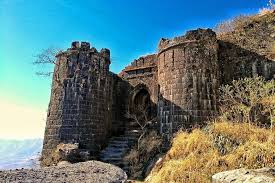

Top Tourist Destinations
Sinhagad Fort
Sinhagad is a hill fortress located at around 35 km southwest of Pune.
Read more...Explore the historical and beautiful locations of Pune
Sinhagad is a hill fortress located at around 35 km southwest of Pune.
Read more...